Start with a skill
Freeze a generative policy trained on demonstrations. A small residual model learns what to change.
Generative robot policy refinement ICRA 2027 manuscript
Anchoring Critic-Guided Fine-Tuning of Generative Robot Policies
A robot can do almost everything right and still fail at the last action. CAST uses reward feedback to correct the mistake while keeping the useful behavior learned from demonstrations.
Anonymous authors
A distribution learns, one target at a time.Illustrative toy actor
The research in motion
See why small critic steps can drift, and how a persistent reference helps a policy improve.
Silent method overview from the ICRA video draft. Its toy distribution is illustrative; benchmark results below come from policy evaluations.
The paper
Reinforcement learning can improve pretrained robot policies, but imperfect critic guidance can also disrupt the useful behaviors they have already learned. Even with a frozen base policy, repeated critic-guided corrections can gradually override useful pretrained behavior, making small updates alone insufficient to ensure its preservation.
We present CAST (Constrained Action-Space Transport), a likelihood-free method that learns residual corrections to a frozen generative policy. CAST constructs action targets by combining critic guidance with a soft pull toward the corresponding base actions and capping each proposed correction. The residual then learns these targets by regression. This design maintains a persistent reference to pretrained behavior while leaving room for adaptation.
Experiments in simulated manipulation show improved task success and fewer environment steps needed to reach a target success rate. Real-robot experiments on OpenArm further show improved placement and stacking success over the pretrained policies. Ablations show that restoration can preserve task success where clipping alone fails, supporting the importance of a persistent reference during refinement.
The central idea
Even when a pretrained policy is frozen, a learned correction can gradually override it. Capping each update only limits the step taken now; many small steps can still move far from the starting behavior.
CAST pairs each candidate with the action the frozen policy would have produced from the same observation and noise. That pairing gives every update a stable reference.
Freeze a generative policy trained on demonstrations. A small residual model learns what to change.
An ensemble critic proposes a local action correction based on expected task return.
Pull the proposal toward the paired base action, limit its size, then teach the residual to match the target.
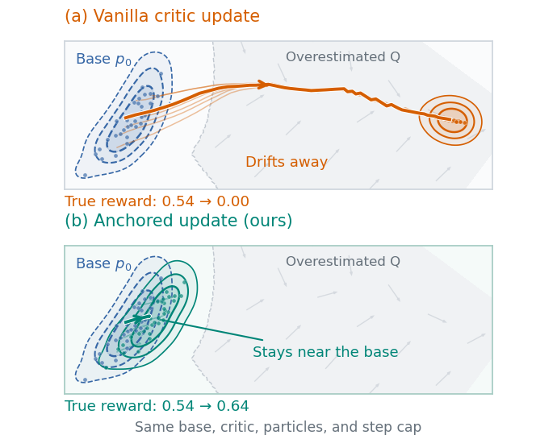
Why a step limit alone cannot stop accumulated drift. Illustrative diagnostic from the paper.
How it works
CAST changes the actor update while keeping the frozen generator and off-policy critic framework.
The particles and density curves come from an actual toy residual actor trained by gradient descent. The blue base stays fixed; the mint policy fits the white target markers. Select a stage to pause and inspect it. This synthetic, fixed-critic illustration explains the update; it is not a robot experiment.
Evidence across settings
We compare against DICE-RL using the same frozen base, critic training, replay settings, and interaction budget within each matched experiment.
LIBERO hard-eight mean over drifting base
Environment steps to 90% on diffusion square
Robomimic square success from a 38.2% drifting base
OpenArm placement over its pretrained base
01 / Visual manipulation
Eight selected challenging tasks; each base was pretrained on all 90 tasks. CAST₁ and CAST₂ use guidance strengths fixed across tasks.
| Task | Drifting base | Flow-matching base | ||||||
|---|---|---|---|---|---|---|---|---|
| Base | DICE-RL | CAST₁ | CAST₂ | Base | DICE-RL | CAST₁ | CAST₂ | |
| Drawer / bowl | 81.8 | 82.0 | 83.1 | 85.7 | 89.7 | 87.3 | 90.0 | 88.7 |
| Stove / pan | 69.0 | 70.3 | 73.7 | 75.2 | 70.0 | 73.0 | 69.0 | 72.7 |
| Drawer / ketchup | 61.0 | 58.7 | 69.4 | 72.9 | 69.0 | 68.2 | 73.8 | 77.3 |
| Basket / juice | 78.5 | 80.0 | 84.2 | 85.3 | 91.7 | 91.5 | 89.7 | 91.3 |
| Plate / red mug | 57.3 | 55.0 | 82.6 | 81.2 | 78.7 | 80.9 | 87.8 | 88.7 |
| Front caddy / book | 64.8 | 66.3 | 71.0 | 75.2 | 68.3 | 69.0 | 66.7 | 78.3 |
| Right caddy / book | 57.8 | 58.3 | 65.7 | 64.8 | 62.0 | 59.2 | 60.8 | 56.3 |
| Study-3 caddy / book | 58.8 | 65.3 | 60.7 | 63.5 | 73.3 | 70.8 | 67.0 | 68.0 |
| Mean | 66.1 | 67.0 | 73.8 | 75.5 | 75.3 | 75.0 | 75.6 | 77.7 |
Success uses 100 rollouts per evaluation seed, with three evaluation seeds. These are not three independent training runs. Means cover this selected eight-task subset.
02 / Generator classes
| Task / base | Base | DICE-RL | CAST |
|---|---|---|---|
| Can / drifting | 87.7 | 94.0–97.0 | 97.8–99.3 |
| Square / drifting | 38.2 | 86.1–90.9 | 91.2–93.0 |
| Square / diffusion | 60.0 | 96.5 | 95.9 |
| Square / flow matching | 57.0 | 83.1 | 93.4* |
* Value-only CAST; its interaction budget is unspecified. Drifting results span three training seeds. Two DICE-RL can runs ended before 20K updates.
03 / Dense + sparse rewards
| Task | Base | Unconstrained | DICE-RL | CAST |
|---|---|---|---|---|
| Dense reward | ||||
| Cartpole swing-up | 429 | 575 | 318 | 715 |
| Cartpole balance | 378 | 815 | 844 | 911 |
| Quadruped run | 238 | 97 | 283 | 312 |
| Finger spin | 3 | 0 | 187 | 187 |
| Sparse reward | ||||
| Cartpole balance | 90 | 880 | 843 | 1000 |
| Ball-in-cup catch | 86 | 940 | 66 | 925 |
Ten evaluation episodes per return. Swing-up uses two training seeds; other tasks use one. Some runs ended before the 400K-step target; quadruped CAST uses tuned guidance, and sparse cartpole DICE-RL has high evaluation variance.
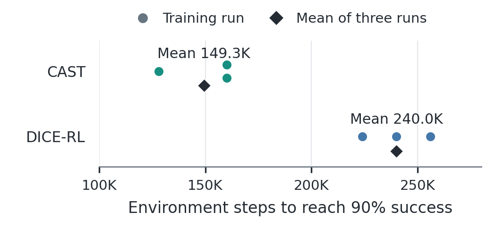
On diffusion-based square, CAST first reaches 90% success at 149.3K steps on average, versus 240K for DICE-RL. Both reach similar final success at 496K steps.
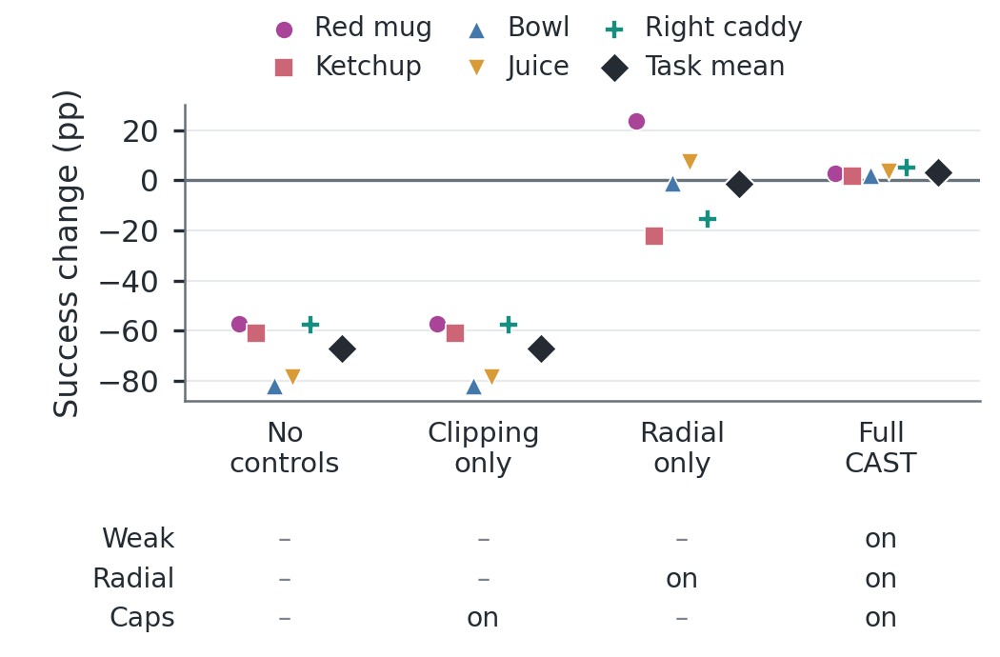
Across five LIBERO tasks, the variants without restoration collapse to zero success, even with clipping. Full CAST improves every task in this study.
Recorded simulator rollouts
LIBERO and robomimic show CAST policy rollouts. The DMC clip shows SAC base-policy training on walker run as task context.
Frozen base and CAST policy from the same initial state.
CAST checkpoints show progress on nut assembly.
SAC training snapshots illustrate this DMC task; this clip is not a CAST evaluation.
Physical deployment
Offline refinement from recorded experience, followed by autonomous trials on placement and stacking tasks.
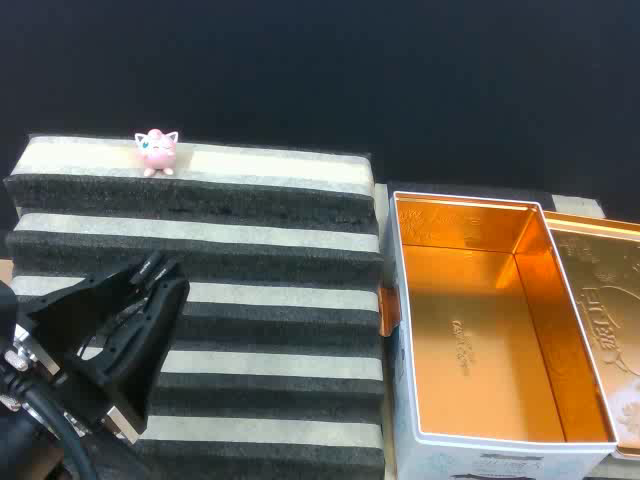
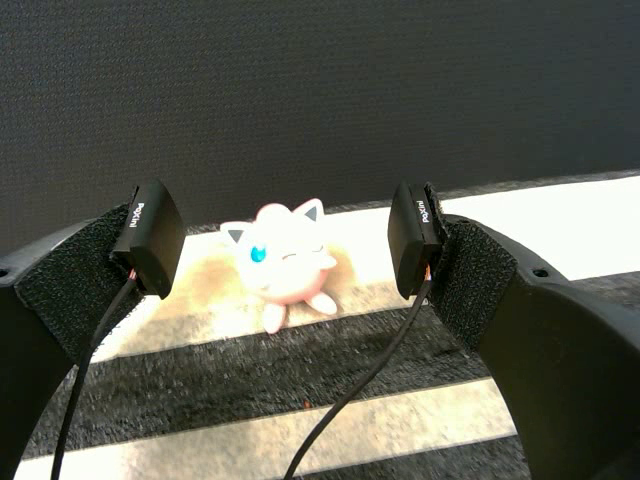
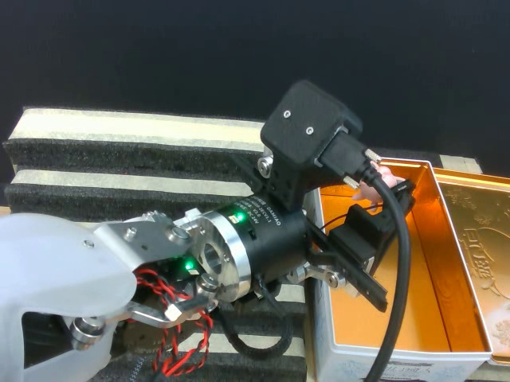
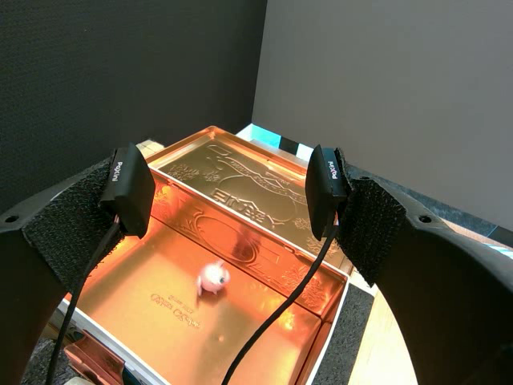
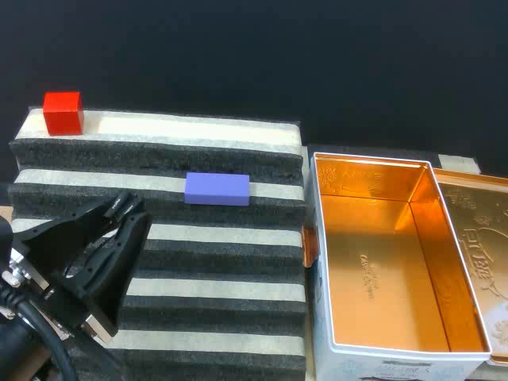
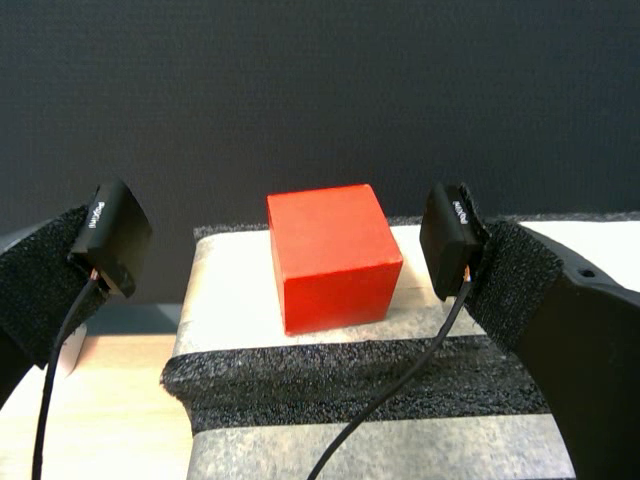
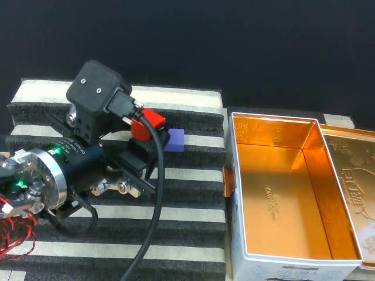
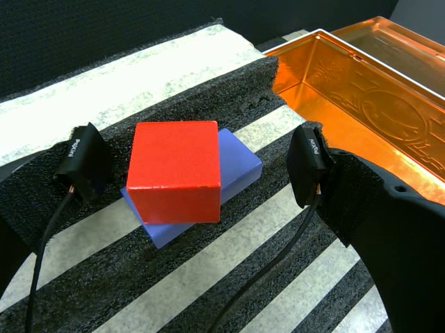
Photo sequences are teleoperated demonstration frames used to show the tasks. The percentages summarize reported autonomous evaluation results.
CAST · Constrained Action-Space Transport
CAST keeps the pretrained policy as a persistent behavioral reference while learning where task feedback calls for a correction.
Back to top ↑